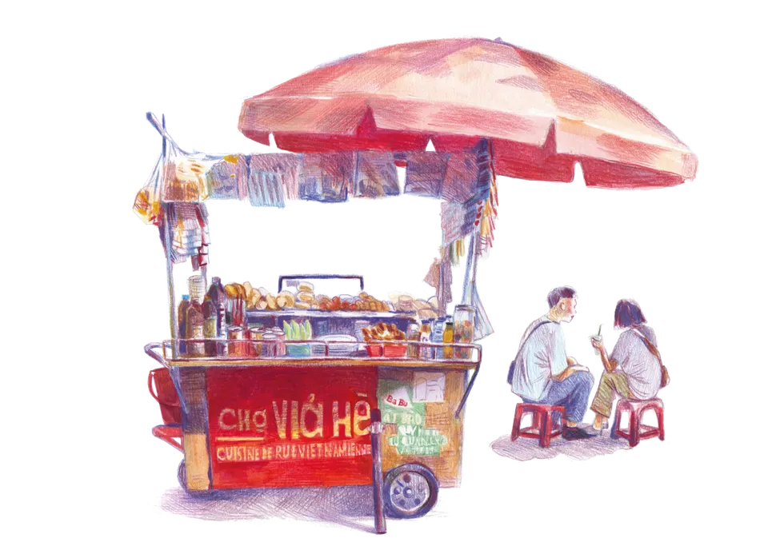
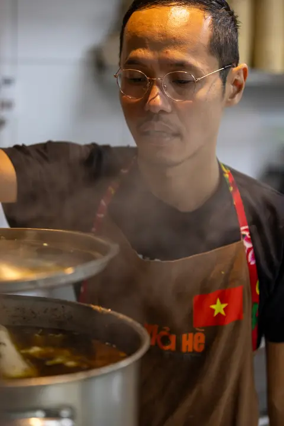
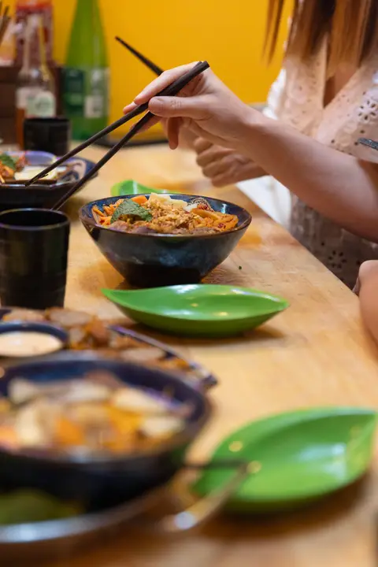
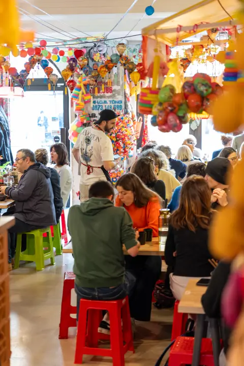

Cuisine de rue vietnamienne · Toulouse
Chợ Vỉa Hè
La cuisine de rue du Vietnam, à Toulouse.
le carnet de voyage d'une famille
Réserver une table Feuilleter le carnet ↓

pg. 02
Ngày xửa ngày xưa… il était une fois
Au Vietnam, le marché fait partie intégrante des souvenirs d'enfance.
À travers le Chợ Vỉa Hè, nous voulons vous raconter ces petites histoires du quotidien qui font battre le cœur du pays.
C'est ce petit garçon qui, chaque jour, attend le retour de sa maman pour fouiller dans son panier, en quête d'une friandise glissée en cachette. C'est ce collégien qui prolonge un moment avec ses amis autour d'un Kem Xôi et d'un thé glacé, quitte à se faire gronder en rentrant. C'est cette écolière qui, chaque matin, se laisse envelopper par la vapeur du premier stand de Bánh bao.
Au Chợ Vỉa Hè, c'est un bout de ce Vietnam-là que nous partageons avec vous : simple, vivant et profondément humain.



pg. 03
On est allés goûter sur place.
Pour créer le décor du Chợ, nous avons arpenté les marchés du Vietnam : la vaisselle vient du village de céramique de Bát Tràng, les fleurs artisanales des grand-mères de Thanh Tiên, les lanternes d'Hội An, les chapeaux coniques de Huế, les tissus de Vạn Phúc — et mille trouvailles marchandées à Hà Nội (en s'arrêtant grignoter pour nourrir la carte, évidemment).


Illustration : un scooter chargé traverse la route entre Hà Nội et Sài Gòn.
pg. 04
Comme sur l'étal
Un aperçu de ce qu'on sert. Les recettes qu'on a rapportées, refaites chaque jour.
Tapas 7–14 € · Plats 15–16 € · Desserts 3–7,50 €

Phở
Le bouillon du matin, mijoté des heures, nouilles de riz et herbes fraîches.

Bánh mì
La baguette de rue, croustillante, crudités marinées et coriandre.

Nems
Croustillants, roulés à la main, à tremper dans la sauce.
Cà phê
Le café filtre vietnamien, intense, avec ou sans lait concentré.

pg. 05
…et le lieu, lui,
ne chuchote pas.
Le papier calme, puis l'éclat : on pousse la porte, et le marché explose — néons, lanternes, couleurs saturées.


pg. 06
Votre table vous attend.
Réservez en ligne, ou passez nous voir. On vous garde une place à l'étal.
Horaires
- Mardi – Samedi 12:00 – 14:30
- Mardi – Samedi 19:00 – 22:30
- Dim. – Lun. Fermé